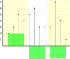

Functions in Prometheus

Monoticity

Playground
Gauge
Gauge

delta
difference between the first and last value of each time seriesdelta
delta
delta
delta
delta
idelta
calculates the difference between the last two samplesidelta
Counter
rate
calculates the per-second average rate of increase of the time series in the range vector.Breaks in monotonicity
rate
Why rate?
Why not delta?irate
calculates the per-second instant rate of increase of the time series in the range vector. This is based on the last two data points. Breaks in monotonicityirate
increase
calculates the increase in the time series in the range vector.Breaks in monotonicity
increase 2
it is syntactic sugar for rate(v) multiplied by the number of secondsincrease